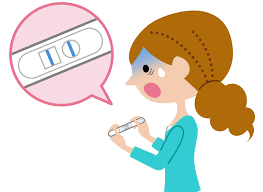

1. Consentimiento Informado
Nos comprometemos a que toda interacción con contenido sexual digital se base en un consentimiento libre, informado, voluntario y reversible.

2. Privacidad y Protección de Datos
Debemos proteger la información íntima y evitar la divulgación de imágenes, conversaciones o datos personales sin autorización expresa.

3. No Discriminación
Promovemos el respeto hacia todas las identidades, expresiones de género y orientaciones sexuales, garantizando espacios digitales libres de prejuicios.

4. Prevención de la Violencia Digital
Nos comprometemos a prevenir, identificar y denunciar cualquier forma de violencia sexual digital, como amenazas, difusión no consentida de contenido íntimo, manipulación o coerción.

5. Educación Digital y Sexual
Promovemos la educación sobre privacidad, autocuidado digital, ciudadanía responsable y respeto dentro de las interacciones en línea.
6. Desigualdad de Género
Reconocemos que la desigualdad de género también se presenta en los entornos digitales. Nos comprometemos a cuestionarla, evitar prácticas discriminatorias y fomentar la igualdad en todas las plataformas.

7. Prevención del Acoso y Ciberacoso
Fomentamos un comportamiento respetuoso, evitando cualquier tipo de acoso o ciberacoso, como mensajes ofensivos, humillaciones, suplantación de identidad o vigilancia indebida en redes sociales.
8. Prevención de Embarazos No Deseados
Promovemos el acceso a información confiable sobre métodos anticonceptivos, toma de decisiones responsables y educación sexual integral para evitar embarazos no deseados.
9. Prevención de Enfermedades de Transmisión Sexual
Impulsamos la búsqueda de información verificada sobre prevención, uso correcto del condón, pruebas de detección y prácticas sexuales seguras para reducir riesgos de enfermedades de transmisión sexual.

Video Informativo
Video educativo sobre cómo ejercer nuestros derechos sexuales y mantenernos seguros en línea.
Mensaje Reflexivo
Reflexión sobre el respeto, la empatía y el autocuidado digital.